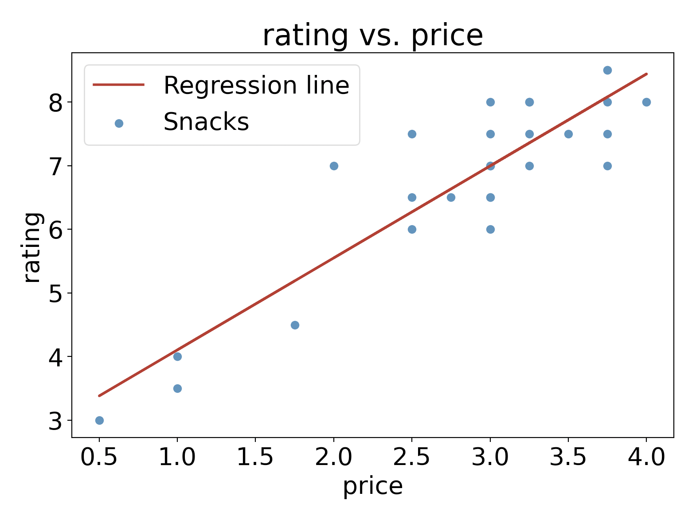

Read the model, answer the question, then decide who should be held accountable for what it did.
Step 1: Read the model

The school used this model to predict a rating for each snack from its price. If the price of a snack is high, will its predicted rating be high or low?
If the school picked the five highest rated snacks with this model, it would pick the most expensive ones. You could tell that just by looking at the chart. That is interpretability: being able to understand why a model made the decisions it did.
Step 2: Who is accountable?
Accountability is the principle that people should be responsible for a model's decisions and its effects.
After the school used this model, parents complained that the vending machine only had the most expensive snacks. Who should be held accountable? Select every answer you think applies.
Your answer
Other answers to consider
Strong answers can name more than one person. If it feels right, ask whether the model's interpretability changes who is accountable.
The person who built the model. Strong answer. They could see the model was predicting that expensive snacks would be popular.
The person who decided to use the model. Strong answer. They could see the same thing, and chose to use the model anyway.
The model itself. Accountability stays with people, not the model. If a student says the model, ask: what would holding a model accountable actually look like?